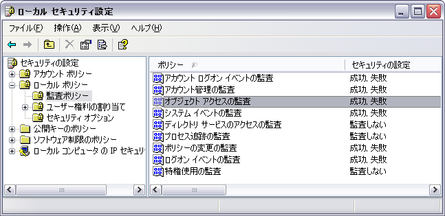

監査内容をセキュリティログに記録する方法
概要：
- 監査の結果は、初期状態でセキュリティログに記録するようになっていません。
- 削除等のファイル操作を追跡するためにファイル・フォルダを監査対象に設定した後、監査の結果をセキュリティログに記録する方法をご案内致します。
対象環境：
- Microsoft Windows 2000又はWindows XP Pro
- Windowsの管理者権限・Administrators権限が必要です
手順：
-
「スタート」→「ファイル名を指定して実行」
→「SECPOL.MSC」実行。「ローカル セキュリティ設定」が立ち上がって参ります。
- 左側にて、「セキュリティの設定」選択、
- 「ローカル ポリシー」選択、
- 「監査ポリシー」選択、
- 右側にて、「オブジェクト アクセスの監査」のプロパティを開く、「成功」をチェックし有効にします。
- 「アカウント ログオン イベントの監査」と「ログオン イベントの監査」も同様にします。
- 「セキュリティの設定」を右クリックし、「再読み込み」を選択します。
